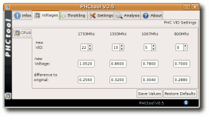

Prozessorspannung absenken
Archivierte Anleitung
Dieser Artikel wurde archiviert, da er - oder Teile daraus - nur noch unter einer älteren Ubuntu-Version nutzbar ist. Diese Anleitung wird vom Wiki-Team weder auf Richtigkeit überprüft noch anderweitig gepflegt. Zusätzlich wurde der Artikel für weitere Änderungen gesperrt.
Hinweis:
Für AMD K8 CPUs gibt es auch Patches, die Installation dieser sollte ebenfalls beschrieben werden. http://www.linux-phc.org/forum/viewtopic.php?f=13&t=2. Ab Ubuntu 9.04 Jaunty kann der bereits gepatchte Kernel verwendet werden.
Artikel für fortgeschrittene Anwender
Dieser Artikel erfordert mehr Erfahrung im Umgang mit Linux und ist daher nur für fortgeschrittene Benutzer gedacht.
Zum Verständnis dieses Artikels sind folgende Seiten hilfreich:
Achtung!
Die Maßnahmen in dieser Anleitung geschehen auf eigenes Risiko, da der Prozessor außerhalb der Herstellerspezifikationen betrieben wird. Es sind noch keine dadurch entstandene Schäden bekannt, können aber nicht ausgeschlossen werden! Diese Anleitung ist deshalb nur für fortgeschrittene Benutzer geeignet, die neben guten Linux-Kenntnissen auch etwas Hardware-Fachwissen besitzen.
Die hier beschriebenen Kernel-Patches haben das gleiche Ziel wie das verbreitete NHC (Notebook Hardware Control)  unter Windows. Der Prozessor wird also mit weniger Spannung betrieben als das vom Hersteller vorgesehen ist. Die erzielbaren Verbesserungen hinsichtlich Akkulaufzeit und CPU-Temperatur sind vor allem unter Volllast sehr groß. Zur Zeit ist der Patch in dieser Anleitung allerdings nur für Intel Pentium-M (Centrino) und Core/Core 2 Solo/Duo CPUs geeignet!
unter Windows. Der Prozessor wird also mit weniger Spannung betrieben als das vom Hersteller vorgesehen ist. Die erzielbaren Verbesserungen hinsichtlich Akkulaufzeit und CPU-Temperatur sind vor allem unter Volllast sehr groß. Zur Zeit ist der Patch in dieser Anleitung allerdings nur für Intel Pentium-M (Centrino) und Core/Core 2 Solo/Duo CPUs geeignet!
Allgemeine Informationen zum Thema Stromsparen findet man unter Strom sparen.
Installation für Ubuntu-Versionen bis Hardy Heron 8.04¶
Für den Ubuntu-Kernel benötigt man den Linux-PHC-Patch, der das Ändern der Spannungswerte durch Schreiben in eine Systemdatei erlaubt. Dabei wird lediglich das für die CPU-Steuerung zuständige Kernel-Modul (eine Datei) verändert.
Welches Kernel-Modul wird benötigt?¶
Zuerst sollte man überprüfen ob vom System das Modul acpi-cpufreq oder speedstep-centrino verwendet wird. Man verwendet dazu folgende Befehle [3]:
lsmod | grep acpi_cpufreq lsmod | grep speedstep_centrino
In der Ausgabe des ersten Befehls sollte acpi_cpufreq vorkommen. Dies bedeutet, dass der Prozessor mit diesem Modul gesteuert wird (Standard). Die nachfolgende Anleitung kann dann ohne Änderungen befolgt werden.
Wenn das nicht der Fall ist und das im zweiten Befehl geprüfte Modul geladen ist, dann sollte eigentlich auf die speedstep-centrino-Variante von Linux-PHC zurückgegriffen werden. Dieser Patch ist allerdings nur für die Kernel-Version 2.6.22 (Ubuntu 7.10) verfügbar. In einigen Fällen kann aber trotzdem das Modul acpi_cpufreq verwendet werden. Näheres dazu im Abschnitt Modul erzwingen.
Da man für jede Kernel-Version den passenden Patch benötigt ist es außerdem noch wichtig zu wissen, welcher Kernel auf dem System installiert ist. Dies bekommt man mit dem Befehl
uname -r
heraus. Entscheidend ist dabei der vordere Teil der Kernelbezeichnung.
Modul selbst erstellen¶
Hier wird beschrieben, wie sich der Patch ohne Kompilieren des gesamten Kernels auf das Modul anwenden lässt.
Noch einfacher ist es allerdings ein fertig kompiliertes Modul (falls verfügbar) zu verwenden. Der Abschnitt "Modul selbst erstellen" kann dann übersprungen werden.
Vorbereitung¶
Folgende Pakete sind notwendig und müssen gegebenenfalls installiert werden [1]:
build-essential
linux-source
linux-headers-generic
 mit apturl
mit apturl
Paketliste zum Kopieren:
sudo apt-get install build-essential linux-source linux-headers-generic
sudo aptitude install build-essential linux-source linux-headers-generic
Hinweis:
Die eigene Kernel-Version muss in der nachfolgenden Anleitung an den mit Stern gekennzeichneten Stellen (z.B. bei Befehlen) berücksichtigt und entsprechend eingesetzt werden!
Der Quellcode des Ubuntu-Kernels liegt nun als linux-source-2.6.*.tar.bz2 im Ordner /usr/src. Von dort lässt sich das Archiv öffnen und beispielsweise in den Home-Ordner entpacken [2].
In den neu entstandenen Ordner muss dann noch der richtige Patch kopiert werden. Dazu wird die zum Kernel passende *.patch-Datei aus dem linux-phc Entwicklerforum heruntergeladen.
Modul kompilieren¶
Nun startet man ein Terminal [3] und wechselt in das Verzeichnis mit dem Kernel-Quellcode und dem Patch:
cd linux-source-2.6.*
Zum Anwenden des Patchs muss folgender Befehl ausgeführt werden:
patch -p1 < linux-phc*.patch
Jetzt kann das Modul mit folgenden Befehlen kompiliert werden:
cd arch/x86/kernel/cpu/cpufreq/ make -C /lib/modules/$(uname -r)/build SUBDIRS=$(pwd) modules
Das fertige Modul namens acpi-cpufreq.ko (bzw. speedstep-centrino.ko) liegt nun im eben kompilierten Ordner arch/x86/kernel/cpu/cpufreq. Diese Datei sollte man getrennt abspeichern. Sie wird später noch benötigt, während man den Rest des Ordners löschen kann.
Alternative - Vorkompiliertes Modul auswählen¶
Um den vorherigen Schritt zu umgehen, kann auch ein fertiges Modul verwendet werden, das bereits für die verwendete Kernel-Version kompiliert wurde. Mögliche Quellen sind das Subversion-Verzeichnis von linux-phc oder das Forum.
Modul installieren¶
Das zuvor generierte oder heruntergeladene Modul kann man nun mit Root-Rechten in den richtigen Ordner kopieren. Zuvor sollte aber (für den Fall der Fälle) eine Sicherheitskopie der alten Datei angelegt werden.
sudo cp acpi-cpufreq.ko /lib/modules/$(uname -r)/kernel/arch/x86/kernel/cpu/cpufreq
Hinweis:
Nach jedem Kernel-Update muss dieser Schritt mit dem aufbewahrten Modul erneut ausgeführt werden.
Nach einem Neustart des Systems sollte die Schnittstelle von Linux-PHC in Form der Datei /sys/devices/system/cpu/cpu0/cpufreq/phc_controls vorhanden sein. Alternativ kann man mit Hilfe von modprobe das alte Modul aus dem Kernel entladen und das neue Modul laden.
Benutzung von Linux-PHC über das Terminal¶
Spannungen auslesen¶
Die aktuellen Frequenz- und Spannungsstufen können über das SysFS-Interface im Terminal [3] ausgelesen werden:
cat /sys/devices/system/cpu/cpu0/cpufreq/phc_controls
Es sollte eine Ausgabe in dieser Form erfolgen:
13:38 10:30 8:24 6:18
Der Wert vor dem Doppelpunkt entspricht der Frequenzstufe (FID), die Zahl dahinter der Spannungsstufe (VID). Im Gegensatz zu älteren Linux-PHC-Versionen werden hier keine absoluten Werte (Hz/V) mehr angezeigt. Dadurch können aber auch aktuelle und zukünftige Prozessoren unterstützt werden. Die FIDs/VIDs sind also lediglich die Werte, die der Prozessor intern in einem Bit-Register als Speicher verwendet.
Spannungen absenken¶
Durch Schreiben in die selbe Datei können die Spannungen (hier nur beispielhaft) geändert werden. Dazu darf lediglich die Spannungsstufe hinter dem Doppelpunkt verkleinert werden:
echo "13:22 10:10 8:5 6:0" | sudo tee /sys/devices/system/cpu/cpu0/cpufreq/phc_controls
Achtung!
Wenn sie zu niedrig gewählt sind, friert das System ein und es muss neugestartet werden. Deshalb vorher unbedingt alles sichern und Datenträger möglichst aushängen!
Zur Überprüfung können die Werte nochmals wie oben abgefragt werden. Da die Spannungen nach oben und unten von der Hardware beschränkt sind kann nicht jeder Wert übernommen werden. Bei Core/Core 2 Solo/Duo CPUs ist die standardmäßig für die niedrigste Taktfrequenz eingestellte VID die niedrigste zugelassene. Man kann dann also nur die Spannung für höhere Frequenzen absenken. Für Besitzer von Zwei-Kern Prozessoren sei noch gesagt, dass sich der zweite Kern automatisch nach der zuletzt eingestellten Spannung richtet.
Sobald die Spannungen ausreichend getestet sind, kann man mit der im Wiki-Artikel rc.local genannten Funktion die CPU-Spannung auch direkt beim Systemstart oder beim Eintritt in einen bestimmten Runlevel einstellen lassen. Dazu schreibt man einfach folgenden Befehl (Beispiel) zum Setzen der gewünschten Spannungen in die Datei hinein:
echo "13:22 10:10 8:5 6:0" > /sys/devices/system/cpu/cpu0/cpufreq/phc_controls
Herausfinden möglicher Spannungseinstellungen¶
Die Spannungswerte müssen (behutsam) für jede einzelne Taktstufe individuell ermittelt werden, da sie selbst bei gleichen Notebook-Modellen stark variieren können. Anhaltspunkte für mögliche Werte finden sich in den Links am Ende dieser Seite.
Schrittweises Austesten bis zum Einfrieren des Systems¶
Bei noch unbekannter CPU-Spannungstoleranz muss man zum Ermitteln der "Schmerzgrenze" die Spannung Schritt für Schritt absenken, bis zum sogenannten "Einfrieren". Dazu kann z.B. folgendermaßen vorgegangen werden:
Alle wichtigen Datenträger aushängen bzw. laufende Schreibvorgänge unbedingt vermeiden.
Die zugehörige Taktstufe des zu verändernden Spannungswertes fest einstellen. Wie das geht ist unter Prozessortaktung beschrieben.
Nun kann Die VID um eine Stufe abgesenkt werden.
Auf Stabilität des Systems prüfen, möglichst mit prozessorlastigen Vorgängen (z.B. mittels Prime95
, CPUBurn etc.) und zeitweise auch im Akkubetrieb. Falls keine Probleme auftreten Schritt 2 wiederholen. Falls die 'Schmerzgrenze' erreicht wurde und das System einfriert, sollte dieser herausgefundene Wert um ein kleines 'Sicherheitspolster' erhöht werden, um ihn dann in Zukunft dauernd verwenden zu können. Nun kann mit der nächsten Frequenzstufe die selbe Prozedur wiederholt werden.
Einstellen bereits bekannter Werte in Volt¶
Da bereits vorhandene Werte meist in Form von direkten Spannungsangaben vorliegen, müssen die VIDs zur besseren Vergleichbarkeit in Volt umgerechnet werden. Dazu kann folgende Tabelle verwendet werden:
| Prozessortyp | Spannung |
| Intel Pentium M, Core, Core2 | 700.0 mV + VID * 16 mV |
| Core2 (alternativ) | 0.7125 V + VID * 0.0125 V |
Rechenbeispiel: Der Abruf der aktuellen Default-VIDs im obigen Abschnitt ergab unter anderem das Pärchen 6:18. Da 6 die niedrigste Frequenzstufe repräsentiert, möchte man dort als erstes die Spannung senken. Die Spannung beträgt nun laut Tabelle 700mV + 18*16mV = 988mV. Da man aber aus Erfahrung weiß, dass der Wert 716mV auch für einen stabilen Betrieb reicht, stellt man dementsprechend die VID 1 ein. Andere Spannungen lassen sich analog berechnen. Die minimal einstellbare VID hängt übrigens vom Prozessortyp ab, es kann also nicht immer bis auf 0 abgesenkt werden.
Wer seinen mathematischen Grund-Rechenfähigkeiten nicht traut, dem sei das graphische PHC-Tool mit automatischer Spannungsberechnung empfohlen.
Ausgangswerte¶
Wenn man während dem Testen verschiedener Spannungen die Ausgangswerte des Prozessors vergessen hat, kann man sie mit folgendem Befehl abrufen:
cat /sys/devices/system/cpu/cpu0/cpufreq/phc_default_controls
Verwendung des PHC-Tools¶

Das Einstellen gewünschter Spannungsstufen kann auch bequem über das PHC-Tool erfolgen. Dies ist eine graphische Oberfläche für das installierte Kernel-Modul und eignet sich gut zum Austesten verschiedener Spannungen. Dabei werden die FIDs und VIDs passend zum CPU-Typ in verständliche Einheiten umgerechnet.
Hinweis: Besitzer von Zwei-Kern Prozessoren müssen für beide Prozessoren die gleiche VID für eine Spannung eingeben, damit die Einstellung Effekt hat.
Herunterladen kann man das Programm aus dem entsprechenden Thread im Entwicklerforum .
Nach dem Entpacken wird das PHC-Tool mit dem im neuen Ordner enthaltenen Skript phctool.sh gestartet. Weitere Hinweise zur Benutzung kann der beiliegenden Dokumentation im Ordner doc entnommen werden.
Zu beachten ist lediglich noch, dass zur Überprüfung der Spannungen mit dem PHC-Tool zuvor das Kernel-Modul msr geladen werden muss. Dies wird hiermit erledigt:
sudo modprobe msr
Problemlösungen¶
Funktionstest¶
Wenn man sich nicht sicher ist, ob die Spannungssenkung erfolgreich war, kann man das mit folgenden Methoden testen.
Indirekt¶
Im Artikel Strom sparen ist genau beschrieben, wie man den Stromverbrauch und die Temperatur messen kann. Nach dem Senken der Spannungen sollten hier vor allem bei hoher Last niedrigere Werte zu beobachten sein.
Mit dem PHC-Tool¶
Das PHC-Tool kann mit Hilfe des msr-Kernel-Moduls die tatsächlich in der CPU erreichten Spannungen ermitteln.
Brutale Variante¶
Wenn man die Spannung bei höheren Taktraten absichtlich viel zu weit absenkt, wird das Notebook "einfrieren", sobald es diese Stufe erreicht.
Fehler beim Abrufen von phc_controls¶
Zuerst sollte man überprüfen, ob die Datei /sys/devices/system/cpu/cpu0/cpufreq/phc_controls vorhanden ist. Danach kann man die folgenden Fälle unterscheiden.
Die Datei phc_controls fehlt¶
Mit dem Befehl lsmod sollte man nun überprüfen, ob das gepatchte Modul überhaupt geladen wurde. Wenn dies nicht passiert ist, kann man das Modul manuell laden, um eventuelle Fehlermeldungen zu erhalten. [4]
Die Datei phc_controls ist vorhanden, lässt sich aber nicht lesen ("No such device")¶
Dies kann bei manchen Pentium-M-Systemen passieren, die keine korrekte ACPI-Implementierung haben und nicht mit acpi-cpufreq kompatibel sind. Zur Vermeidung dieses Problems muss auf das speedstep-centrino-Modul ausgewichen werden. Der Patch dazu lässt sich analog zu obiger Anleitung kompilieren. Teilweise kann die ACPI-Implementierung auch durch ein BIOS-Update korrigiert werden.
Ein Kernel-Modul erzwingen¶
Wenn man sich sicher ist, dass sein Laptop mit einem gepatchten acpi_cpufreq korrekt funktioniert, Ubuntu aber trotzdem speedstep_centrino verwendet (oder umgekehrt), dann hat man die Möglichkeit, das gewünschte Modul zu erzwingen. Im Einzelnen geschieht dies, durch Blacklisting des unerwünschten Moduls und automatisches Starten des gewünschten Moduls. [4]
Links¶
Linux Processor Hardware Control
- Projektseite von linux-phc und PHC-Tool HOWTO Undervolt a Pentium-M
- Ursprünge des Kernelpatches (Gentoo-Community) mit Spannungstabellen für verschiedene Prozessoren Mehr Akkulaufzeit für Centrino
 - Artikel mit einigen Grundlagen über Undervolting, allerdings für Windows
- Artikel mit einigen Grundlagen über Undervolting, allerdings für Windows Undervolting in Ubuntu 10.04
- Anleitung mit Skript zur automatischen Anpassung der ProzessorspannungGranola - Tool zur automatischen Anpassung der Prozessorfrequenz und -spannung, je nach jeweiliger Auslastung der CPU
k10ctl - Alternative Anleitung
- Erstellt mit Inyoka
-
 2004 – 2017 ubuntuusers.de • Einige Rechte vorbehalten
2004 – 2017 ubuntuusers.de • Einige Rechte vorbehalten
Lizenz • Kontakt • Datenschutz • Impressum • Serverstatus -
Serverhousing gespendet von